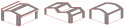
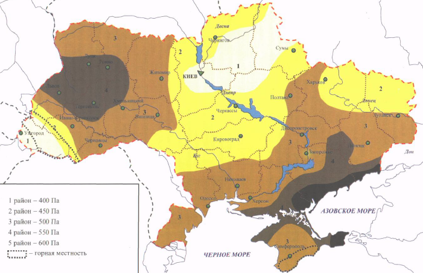

ДБН В.1.2-2:2006 навантаження і впливи
9 ВІТРОВІ НАВАНТАЖЕННЯ
z= м, висота споруди
B= м, ширина чи диаметр
9.11 Коефіцієнт рельєфу Сrеl враховує мікрорельєф місцевості поблизу площадки розташування будівельного об'єкта і приймається таким, що дорівнює одиниці, за винятком випадків, коли об'єкт будівництва розташований на пагорбі або схилі.
$\varphi=0.05$ ухил з підвітряного боку (ухил H/L з підвітряного боку)
$$С_{rеl}={{C_rel=1}}$$
9.12 Коефіцієнт напрямку Cdir враховує нерівномірність вітрового навантаження за напрямками вітру і, як правило, приймається таким, що дорівнює одиниці. Значення Cdir , що відрізняється від одиниці, допускається враховувати при спеціальному обґрунтуванні тільки для відкритої рівнинної місцевості та при наявності достатніх статистичних даних. $$C_{dir}={{C_dir=1}}$$
9.10 Коефіцієнт географічної висоти Саlt враховує висоту H (в кілометрах) використовується для об'єктів, розташованих у гірській місцевості приймається і дає орієнтовне значення в запас надійності. Для об'єктів масового будівництва: $$C_{alt}={{C_alt=1}}$$
9.9 Коефіцієнт висоти споруди Ch враховує збільшення вітрового навантаження залежно від висоти споруди або її частини, що розглядається, над поверхнею землі , типу навколишньої місцевості і визначається за по табл.9.02 для всіх будівель та споруд старший період власних коливань яких перевищує 0,25 с.
Типи місцевості, що оточує будівлю чи споруду, визначаються для кожного розрахункового напрямку вітру окремо:
I - відкриті поверхні морів, озер, а також плоскі рівнини без перешкод, що піддаються дії вітру на ділянці довжиною не менш як 3 км;
II - сільська місцевість з огорожами (парканами), невеликими спорудами, будинками і деревами;
III – приміські і промислові зони, протяжні лісові масиви;
IV – міські території, на яких принаймні 15% поверхні зайняті будівлями, що мають середню висоту понад 15 м.
При визначенні типу місцевості споруда вважається розташованою на місцевості даного типу для певного розрахункового напрямку вітру, якщо у цьому напрямку така місцевість є на відстані $30 \times Z = 30 \times {{z}} = {{Math.round(30*z)}}$ м, при повній висоті споруди Z < 60 м або 2 км – при більшій висоті.
Тип місцевості:
$C_h={{c_h}}$
9.16 При розрахунку кріплень елементів огороджень до несучих конструкцій у кутах споруди і по зовнішньому контуру покриття слід враховувати місцевий від'ємний тиск вітру з аеродинамічним коефіцієнтом Саеr = –2, розподілений вздовж поверхонь на ширині 1,5 м. (рис. 9.11). $$С_{аеr} = –2 $$
9.8 Аеродинамічні коефіцієнти Саеr визначаються за додатком І залежно від форми споруди або конструктивного елемента і можуть мати вигляд:
Схема 2. Будівлі с двосхилими покриттями
коефіцієнти Сe, які слід враховувати при визначенні вітрового тиску, прикладеного нормально до зовнішніх поверхонь споруди або елемента і віднесеного до одиниці площі цієї поверхні;
$$С_{аеr} = {{C_aer=0.8}}$$
9.13 Коефіцієнт динамічності Cd враховує вплив пульсаційної складової вітрового навантаження і просторову кореляцію вітрового тиску на споруду.
9.16 При расчете креплений элементов ограждения к несущим конструкциям в углах здания и по внешнему контуру покрытия следует учитывать местное отрицательное давление ветра с аэродинамическим коэффициентом Саеr = –2, распределенное вдоль поверхностей на ширине 1,5 м (рис. 9.11).
Рисунок 9.5. Коефіцієнт Cd для кам'яних будівель і будівель із залізобетонним каркасом
Рисунок 9.6. Коефіцієнт Cd для будівель із сталевим каркасом
Рисунок 9.7. Коефіцієнт Cd для будівель із сталебетонним каркасом
Для основних типів будівель і споруд значення Cd визначаються за графіками на рис. 9.5-9.10. Наведені на рисунках ширина і діаметр прийняті в перерізі, перпендикулярному до вітрового потоку.
Cd= в залежності від висоти Z={{z}}м, та ширини B={{B}}м, споруди
9.7 Коефіцієнт С визначається за формулою: $$C = C_{aer} \times C_h \times C_{alt} \times C_{rel} \times C_{dir} \times C_d $$ $$C = {{C_aer}} \times {{c_h}} \times {{C_alt}} \times {{C_rel}} \times {{C_dir}} \times {{C_d}}= {{C=Math.round(C_aer*C_h*C_alt*C_rel*C_dir*C_d*100)/100}} $$
Характеристичне значення вітрового тиску W0 визначається залежно від вітрового району по карті (рис. 9.1)  або за додатком Е.
W0= Pa
9.14 Коефіцієнт надійності за граничним розрахунковим значенням вітрового навантаження визначається залежно від заданого середнього періоду повторюваності Т за табл. 9.1.
згідно ДБН В.1.2-14:2018 Загальні принципи забезпечення надійності та конструктивної безпеки будівель і споруд
| Найменування | Орієнтовне значення розрахункового строку експлуатації Tef, років |
|---|---|
| {{year}} |
$$\gamma_{fm}={{gamma_fm}}$$
9.15 Коефіцієнт надійності за експлуатаційним розрахунковим значенням вітрового навантаження $\gamma_{fe}$ визначається за табл. 9.3 залежно від частки часу $\eta$ , протягом якої можуть порушуватися умови другого граничного стану.
Значення $\eta$ приймається за нормами проектування конструкцій або встановлюється завданням на проектування залежно від їхнього призначення, відповідальності та наслідків виходу за граничний стан. Для об'єктів масового будівництва допускається приймати $\eta= 0,02$ $\gamma_{fe}={{gamma_fe=0.21}}$
9.5 Експлуатаційне розрахункове значення вітрового навантаження визначається за формулою: $$ W_e = \gamma_{fe} \times W_0 \times C = {{gamma_fe}} \times {{W_0}} \times {{C}} = {{W_e=Math.round(gamma_fe*W_0*C*100)/100}} Па$$
9.4 Граничне розрахункове значення вітрового навантаження визначається за формулою: $$W_m = \gamma_{fm} \times W_0 \times C = {{gamma_fm}} \times {{W_0}} \times {{C}} = {{W_m = Math.round(gamma_fm*W_0*C*100)/100}} Па $$
| Вид вітрового навантаження | Саlt=0.8 | Саlt=-2 |
|---|---|---|
| Експлуатаційне, Па | {{W_e}} | {{Math.round(W_e/0.8*(-2)*100)/100}} |
| Граничне розрахункове значення, Па | {{W_m}} | {{Math.round(W_m/0.8*(-2)*100)/100}} |
10 Па = 1 $\frac{ кгс }{ м^2 }$